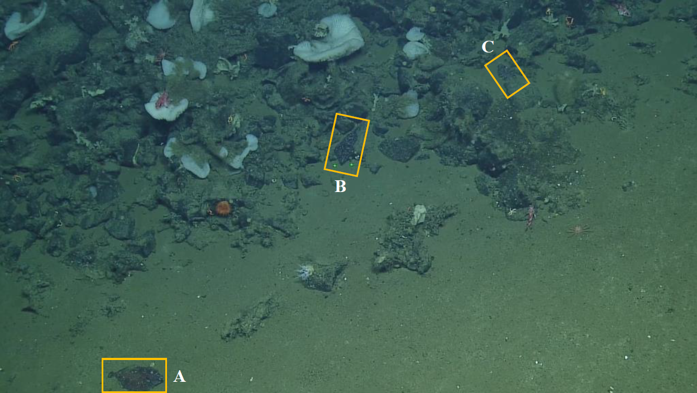

Honours Research
Distribution and Substrate Preferences of Deepsea Sole (Embassichthys bathybius) on Northeast Pacific Seamounts
Flatfish distribution studies have long focused on two things: the continental slope and their preferred size of sand/mud sediment particles. This has left little understanding of their use of offshore habitats and has possibly ignored their relationship to more complex substrates such as corals, rocks, and sponges. This study investigated the substrate preferences and size distribution of Deepsea sole on six rocky Northeast Pacific seamounts. Conventional wisdom would dictate that these fish prefer sandy substrates, but this study tested the hypothesis that the relationship of deepsea sole would mirror that in laboratory experiments for similar species, of preferring or having an equal affinity for complex substrates.
To address this, image stills, provided from an expedition conducted in 2018 using Remotely Operated Vehicles that traversed these seamounts, were annotated using BIIGLE 2.0. The identified fish population was subdivided by size into 3 classes: Juveniles (<10 cm), Young Adults (10–20 cm) and Adults (>20 cm). Furthermore, 3 substrate categories were employed: Sand (i.e., loose material including mud), Non-Sand (i.e., coral, rocks, and sponges), and Even (50/50 distribution of Sand and Non-Sand).
Relating fish size to environmental variables revealed that average depth, temperature, and dissolved oxygen concentration were all significantly different between the Juvenile/Adult and Juvenile/Young Adult classes (p <0.001). This mirrors trends of ontogenetic vertical migration seen on the continental slope and suggests that the higher oxygenated, shallower pinnacles of these seamounts are important nursery grounds for juveniles. Substrate results revealed that substrate type had a significant impact on fish presence (p = 0.008). Deepsea sole displayed a bias for complex substrate (69% of the cases even though Non-Sand substrate has only 55% availability), with a 2:1 preference seen in areas of Even substrate.
This study highlights the importance of protecting these heterogeneous environments while calling into question the habitat classification that has long been assigned to this flatfish species. These seamounts have historically faced intense fishing pressures, although they are now protected as marine protected areas. But they are currently experiencing a loss of dissolved oxygen due to anthropogenic climate change. Within a changing ocean, it is essential we have baseline distribution data as explored by this study. Further monitoring of these areas as possible offshore refugia against the continued trawling pressures seen on the continental slope will inform effective management practices for the future.
 Examples of Embassichthys bathybius individuals on different substrate types, pictured here on Dellwood seamount. (A) Deepsea sole individual on sand. (B) Upon zooming into this sole it becomes evident that its fins are on top of rocks. Therefore, on non-sand substrate. (C) This individual appears to be touching rocks on its right side, therefore, it was labelled with the non-sand substrate.